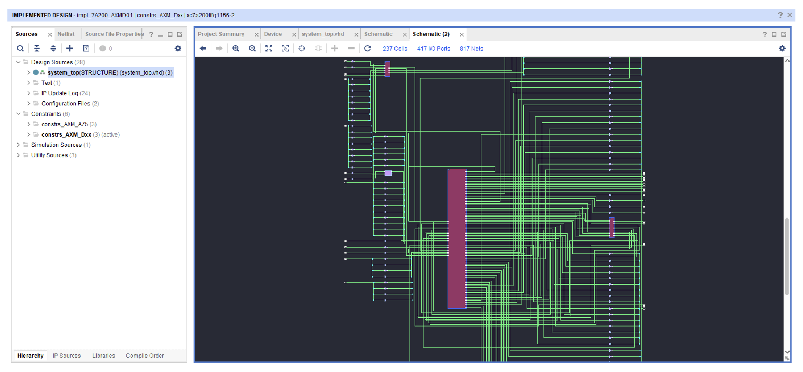

Systems Engineering Internship
I worked as systems engineering intern at Raytheon Technologies this past summer where I gained experience in both hardware and software.
The design process begins in AutoCAD where I drafted an endless amount of foldable patterns. These patterns would be stitched into a plastic sheet using a paper cutter which could then easily be folded into the structure displayed. In addition, I inhertied and redesigned the copper circuit which would control the mechanical logic of the crawler. The circuit is lazer cut and taped down to the body of the crawler; it consists of an OR gate and a switch. In short, when the crawler made contact with a wall, the OR gate would send that information to the switch, which would reverse the direction of the motors.
During testing, one of our concerns was the communication between the antena sensors and the mechanical logic; in order to ensure flush contact, I implemented magnets, which with a small trigger force, would complete the circuit. Towards, the end of the project, I redesigned the circuit to individually communicate messages to the motors. While at first, triggering either motor would reverse both motors, I was able to ensure only one motor reversed depending on the antena that caused switch. The idea, was that moving forward, we would be able to avoid obstacles after sensing them.